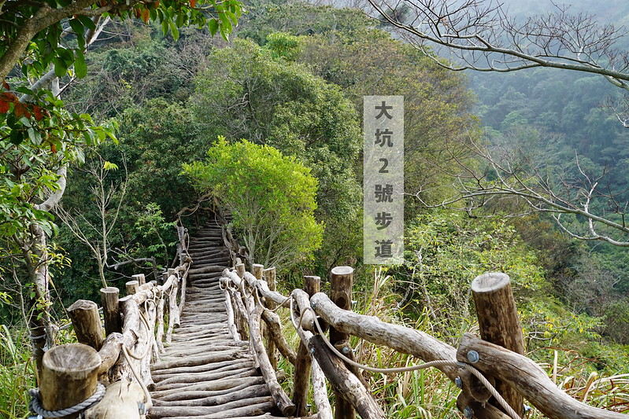
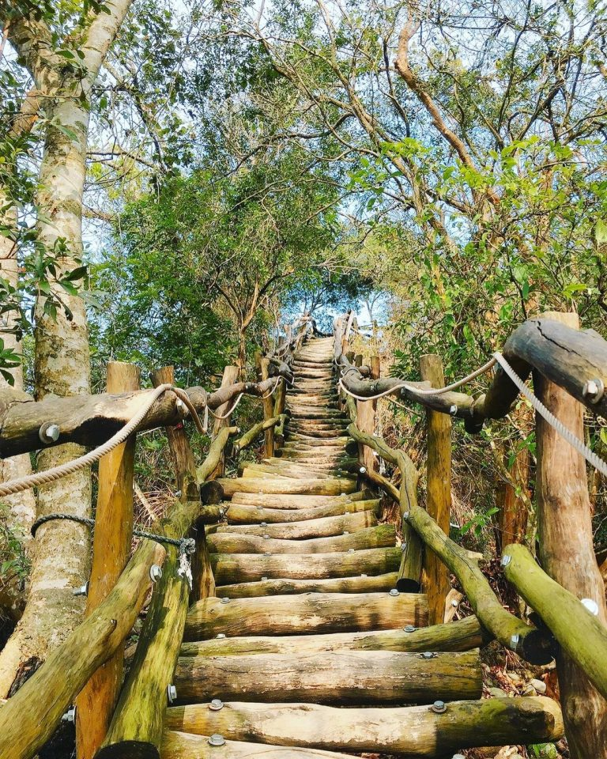
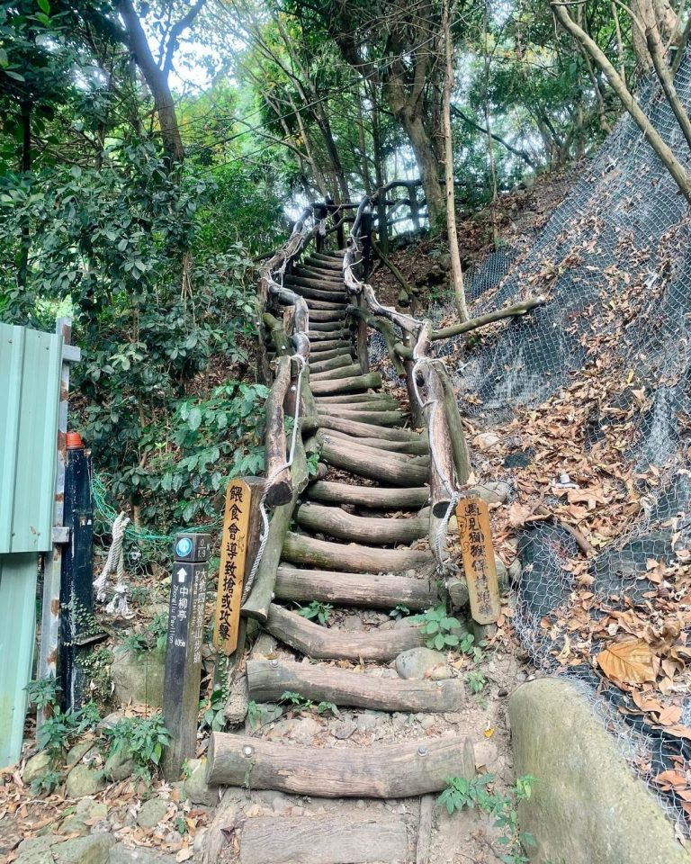

登山入口處：連坑巷40號。大坑步道2號停車場走東山路二段右轉清水巷後約5公里。Google搜尋可找「大坑2號步道」

人氣很高，難度也高的大坑2號步道，雖然是1～5號裡最短的一條，登山口進去前段還是騙人安心的平緩產業道路，等過了碎石梯後才是考驗的開始。最著名的圓形枕木好漢坡坡度又陡又長，超級消耗腿力跟體力。短短的路程裡好幾道大坡度上上下下下的關卡，走到最後真的覺得是種考驗! 但爬上去之後的美景讓人覺得辛苦都是值得的!選擇2號步道上山下山的人挺多，一路連結5號步道再從3號步道下山也是很多人安排的選項。

登山入口處：自大坑圓環右轉橫坑巷，至連坑巷右轉到中正露營區再經停車場至長青橋即為登山口。Google搜尋可找「中正露營區停車場」

被認為是大坑步道群裡景色最美的大坑4號步道，最美但也是最硬的一條！登山口的長青橋可以先輕鬆的拍照打卡再開始挑戰，之後可就拍不到這麼輕鬆寫意的照片。4號步道一開場就是坡度很大的直上圓木相思木棧道，途中當然也是許多上上下下的超高角度陡坡，很多時候需要雙手輔助攀爬，真的得要先練好體能跟腳力，也得準備好相當的裝備再來挑戰！步道終點就是設有頭嵙山標示跟三角點的頭嵙亭，當然得要拍照打卡為了這超硬行程留念囉～